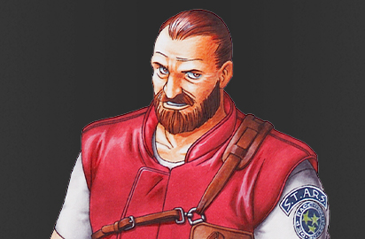

Characters
Chris Redfield
One of the protagonists of the game. Chris is much stronger and faster than Jill, making him more resistant to enemy attacks and have more possibilities to avoid them. But to compensate for this strength, his scenario is made more challenging
Jill Valentine
One of the protagonists of the game. Jill's scenario is the simpler of the two, as she has a higher carrying capacity (eight items simultaneously, as opposed to Chris' six) and has a lockpick that serves as a substitute for the small keys in Chris' scenario (as well as the Sword Key in the original game).
Barry Burton
A S.T.A.R.S. member who assists Jill in her search. Barry is blackmailed into murder and the destruction of evidence by the traitorous S.T.A.R.S. leader, Albert Wesker. Barry has make to choice between to obey Wesker orders or disgrade them and saves his fellow S.T.A.R.S members lives and his family pays the price
Rebecca Chambers
A S.T.A.R.S. member who assists Chris in his search. Rebecca is one of the survivors of the incident, whose disappearance prompted Alpha team's investigation, and is currently the only one alive from the Bravo team.
Albert Wesker
Leader of Alpha team and S.T.A.R.S., Wesker was also an undercover spy of Umbrella and plans to dispose of his former teammates and gather data on the Bio-Organic Weapons.

STARS Alpha and Bravo Team
Two teams in the S.T.A.R.S unit:
Alpha: Chris Redfield, Jill Valentine, Barry Burton, Brad Vickers, Joseph Frost, Albert Wesker
Bravo: Enrico Marini, Kenneth J. Sullivan, Rebecca Chambers, Forest Speyer, Richard Aiken, Edward Dewey